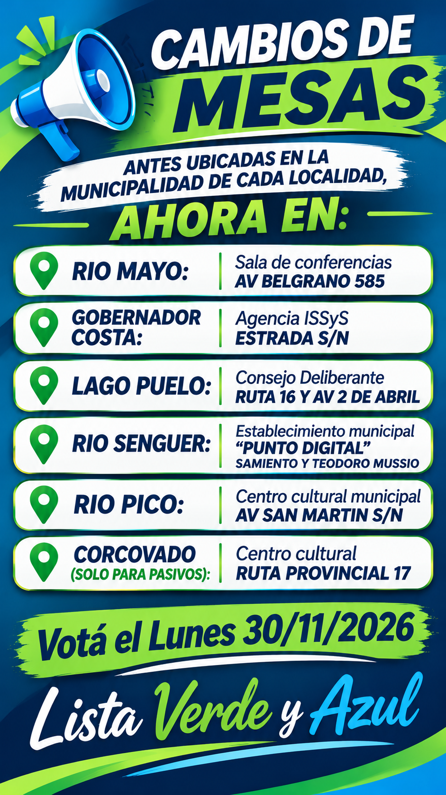

Tu jubilación, tu obra social y tus derechos merecen tu compromiso.
Tu indiferencia no frena las decisiones. Tu participación puede cambiar quién las toma.
*históricamente en promedio sólo el 10% del padrón elige el futuro de todos
Maria Barrera
Jose Roberto Marquez
Sector Pasivos • ISSyS
Nuestra boleta

Consultar mesas

Somos más que 3 representantes por boleta, somos un equipo que en los próximos 2 años vamos a estar presentes con cada afiliado! ¡Apoyanos con tu voto!

Daniel Terraza (Vocal por los Activos) y José Barcelona (Vocal por los Pasivos). La mejor dupla para representar a cada afiliado del ISSyS.
Compartí con todos tus amigos y familiares, La lista Verde y Azul es el equipo de trabajo para TODOS
Cuenta Regresiva Oficial
Falta muy poco para las elecciones
Apertura de urnas: Lunes 30 de Noviembre de 2026 a las 09:00 hs (Chubut Argentina)
000
Días
00
Horas
00
Minutos
00
Segundos
¡Llegó el día! Ya podés acercarte a votar por la Lista Verde y Azul.
Información Útil • Elecciones 2026
Preguntas Frecuentes
Seleccioná cada consulta para ver toda la información oficial